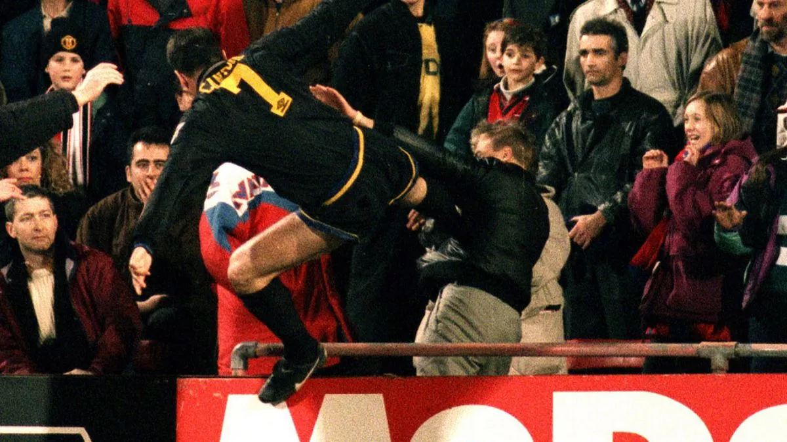

Welcome to the archive about soccer players throughout the years that have been banned. However, some of them
who have been banned are still praised as legends to this day while some are forgotten by everyone. See for yourself how
and why some of them turned out this way.
The Legends
Paolo Rossi
Banned in 1980.
Banned from a betting scandal and accused of fixing Italian soccer matches.
3 year ban.
Seen as still a LEGEND due to his amazing performance after his ban in the 1882 World Cup, redeeming
himself and becoming one of the most memorable underdogs.
Diego Maradona
Banned in 1991.
Tested positive for cocaine.
15 months ban.
Seen as still a LEGEND due to his unmatched talent and skill on the field. One of the greatest players ever.
Eric Cantona

Banned in 1995.
Dismissed off the field after kicking Richard Shaw of Crystal Palace when playing against him. Also kung-fu' kicking a
Crystal Palace fan in the stands who was shouting at him when he was walking off.
8 months ban.
Seen as still a LEGEND due to his unpredicted behavior that resulted in his ban and many Manchester United fans see him as
one of the greatest soccer players.
Zinedine Zidane
Banned in 2006
Headbutted Marco Matterazzi of the Italian team in the chest during the World Cup final between France and Italy.
Three match ban.
Seen as still a LEGEND since he is still one of the best and most respected midfielders who transitioned into one of the best
coaches for Real Madrid.
Luis Suárez
Banned in 2010, 2013, and 2014
Banned for biting several times throughout his career
2010- Bit PSV’s Otman Bakkal’s shoulder
2013- Bit Chelsea’s Branislav Ivanović
2014- Bit Italy’s Giorgio Chiellini during the World Cup
Banned for a total of 17 matches + additional 4 months.
Seen as still a LEGEND since his skills and achievements such as being one of the greatest
strikers in history and the highest goal scorer of Uruguay.